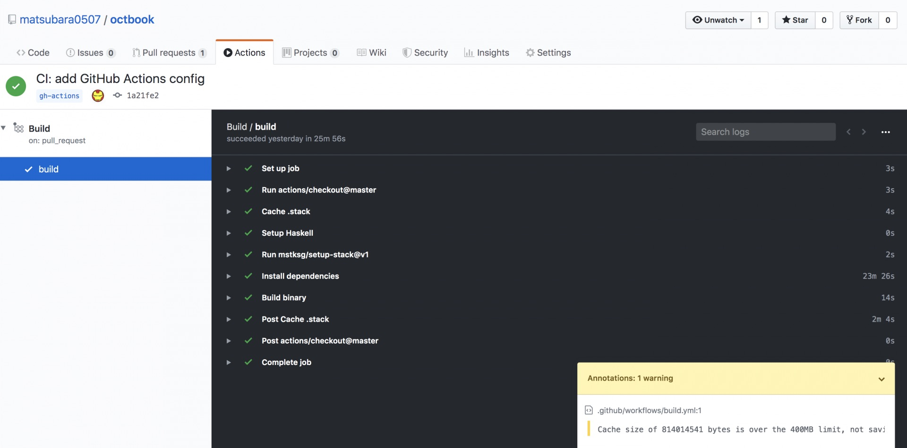
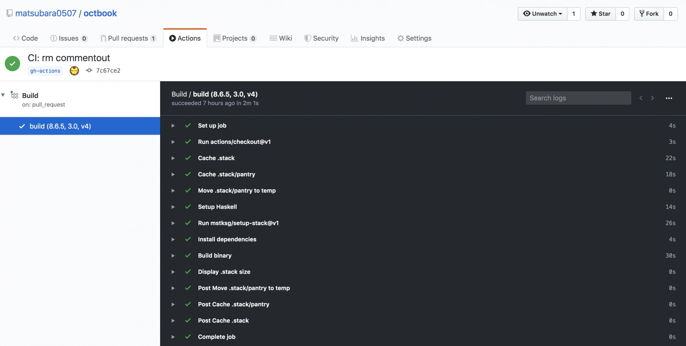

Haskell で GitHub Actions する
本記事は「Haskell Advent Calendar 2019」の2日目の記事です．
2019/11/13 に GA された GitHub Actions を使って，Haskell プロジェクト，とりわけ Haskell Stack を使ったプロジェクトを CI/CD します．
ちなみに，試すために導入した PR はこれです:
これは適当な設定ファイルから GitHub の Organization や Organization の Team 機能にユーザーを招待したりキックしたりするための CLI ツールです．
Cabal の場合
はわりかし簡単． Haskell のセットアップは公式がすでに用意してくれてるのでこれを使えば良い:
こんな感じ:
jobs:
build:
name: ghc ${{ matrix.ghc }}
runs-on: ubuntu-16.04
strategy:
matrix:
ghc: ["8.2.2", "8.4.4", "8.6.5", "8.8.1"]
cabal: ["3.0"]
steps:
- uses: actions/checkout@master
with:
fetch-depth: 1
- uses: actions/setup-haskell@v1
name: Setup Haskell
with:
ghc-version: ${{ matrix.ghc }}
cabal-version: ${{ matrix.cabal }}Haskell パッケージ系のリポジトリなら，こんな感じに matrix の設定をすると良い． で，キャッシュする場合は，この matrix ごとに ~/.cabal/store だけをキャッシュすれば十分らしい（教えてもらった）:
steps:
...
- name: Cache .cabal
uses: actions/cache@preview
with:
path: ~/.cabal/store
key: ${{ matrix.ghc }}-cabal-${{ hashFiles('**/fallible.cabal') }}
restore-keys: |
${{ matrix.ghc }}-cabal-
- uses: actions/setup-haskell@v1
name: Setup Haskell
with:
ghc-version: ${{ matrix.ghc }}
cabal-version: ${{ matrix.cabal }}
- name: Install dependencies
run: |
cabal v2-update
cabal v2-build --only-dependencies
- name: Build & test
run: |
cabal v2-build
cabal v2-testCabal の方はちゃんと調査してないのでこんでお終い（すいません）．
Stack の場合
こっからが本題．
Stack はキャッシュすべきディレクトリ ~/.stack がでかすぎる． 下記は試しに GitHub Actions 上で du して見た結果だ:
$ du -sh ~/.stack/*
4.0K /home/runner/.stack/config.yaml
1.3G /home/runner/.stack/pantry
553M /home/runner/.stack/pantry.sqlite3
0 /home/runner/.stack/pantry.sqlite3.pantry-write-lock
1.8G /home/runner/.stack/programs
16M /home/runner/.stack/setup-exe-cache
64K /home/runner/.stack/setup-exe-src
462M /home/runner/.stack/snapshots
192K /home/runner/.stack/stack.sqlite3
0 /home/runner/.stack/stack.sqlite3.pantry-write-lock現在，actions/cache@v1 では一度にキャッシュできるディレクトリの最大サイズは400MBしかない（今後緩和される可能性はあるが）． actions/cache は内部で gzip かなんかで圧縮しているので，この数字まんまではない． 試しに，このまんまキャッシュしてみたら次のような警告が出た:
Post job cleanup.
/bin/tar -cz -f /home/runner/work/_temp/2706cc23-8789-4ed4-b4ec-4e7143b1cc98/cache.tgz -C /home/runner/.stack .
##[warning]Cache size of 814014541 bytes is over the 400MB limit, not saving cache.800MB強，意外と少ない！
余談だが，そのうち v1.0.2 から毎回キャッシュサイズが見れるようになるはず（今でも ACTIONS_STEP_DEBUG を Secret に設定すると見れる）．
system-ghc を使う
stack は --system-ghc オプションを使うことで stack がインストールした GHC の代わりに，ホストマシンの GHC を直接使ってくれる:
jobs:
build:
runs-on: ubuntu-18.04
strategy:
matrix:
ghc: ["8.6.5"]
cabal: ["3.0"]
cache-version: ["v4"]
steps:
- uses: actions/checkout@v1
with:
fetch-depth: 1
- name: Setup Haskell
uses: actions/setup-haskell@v1
with:
ghc-version: ${{ matrix.ghc }}
cabal-version: ${{ matrix.cabal }}
- uses: mstksg/setup-stack@v1
- name: Install dependencies
run: stack --system-ghc build --only-dependencies
- name: Build binary
run: stack --system-ghc install --local-bin-path=./binなんと system-ghc を使うことで ~/.stack/programs が保存されなくなった（ここには stack がインストールした GHC が保存されてた）． これで，半分弱の削減に成功．残り約500MB．
必殺奥義: 分割キャッシュ
実は，キャッシュの最大サイズ 400MB は 一つのディレクトリ毎の最大サイズ だ． なので，別々のディレクトリを別々にキャッシュすれば，最大 2GB までキャッシュできる（これがリポジトリ単位での最大サイズ）．
~/.stack/pantry というのが単体で 1.3GB ある． なので，これだけとそれ以外をキャッシュするようにしてみる． ちなみに，Pantry というのが Stack の依存パッケージのキャッシュシステムだ．
ここで問題が1つ． actions/cache はディレクトリを1つ指定して，それを圧縮しキャッシュしする． 複数のディレクトリを指定したり，中の一部のファイルだけを除外したりなどはできない（少なくとも現在のバージョンでは）． もちろん，一旦 mv してキャッシュし，restore したら mv し直せば良い． が，めんどいね． 単純なことはソフトウェアで解決しよう． ソフトウェアエンジニアの精神です（？）．
ということで，それをやってくれるアクションがこちら:
ついに TypeScript デビューした． はい，actions/cache を参考にしてきていい感じに書き直しただけです． mkdir や mv は actions/toolkit にあるので簡単に実装できた:
import * as core from "@actions/core";
import * as io from "@actions/io";
import * as utils from "./utils/actionUtils";
async function run(): Promise<void> {
try {
const source = utils.resolvePath(
core.getInput("source_dir", { required: true })
);
// 残念ながら inputs は文字列しか渡せないので改行で分割してる
const files = core
.getInput("source_files", { required: true })
.split(/\r?\n/)
.filter(pat => pat)
.map(pat => pat.trim());
const target = utils.resolvePath(
core.getInput("target_dir", { required: true })
);
await io.mkdirP(target);
core.debug(`mkdir -p ${target}`);
files.forEach(async function(file) {
try {
const path = source.concat("/", file);
await io.mv(path, target);
core.debug(`mv ${path} to ${target}`);
} catch (error) {
core.warning(error.message);
}
});
} catch (error) {
core.warning(error.message);
}
}
run();
export default run;使うときはこんな感じ:
- name: Move .stack/pantry to temp
uses: matsubara0507/actions/move-files@master
with:
source_dir: ~/.stack-temp/pantry
source_files: |
pantry
target_dir: ~/.stack実は，GitHub Actions には隠し機能（現状ドキュメントには書いてない）として post と post-if というのがある（actions.yml に設定できる）:
name: 'Move Files'
description: 'move files to other direcotory'
inputs:
source_dir:
required: true
source_files:
required: true
target_dir:
require: true
runs:
using: 'node12'
main: 'dist/move/index.js'
post: 'dist/restore/index.js' # move.ts とは全く逆のことをするだけ
post-if: 'success()' # move が成功したときにだけこれは actions/cache や actions/checkout がやっているやつで，ジョブステップの最後にデストラクタのように指定したアクションを実行してくれる機能だ． ちなみに，実行したステップとは逆順にポストステップは実行する．
これと actions/cache を組み合わせることで，自由にキャッシュしたいディレクトリを分割してキャッシュすることができるようになった！
steps:
- uses: actions/checkout@v1
with:
fetch-depth: 1
- name: Cache .stack
id: cache-stack
uses: actions/cache@v1
with:
path: ~/.stack
key: ${{ runner.os }}-stack-${{ hashFiles('**/stack.yaml.lock') }}
restore-keys: |
${{ runner.os }}-stack-
- name: Cache .stack/pantry
id: cache-pantry
uses: actions/cache@v1
with:
path: ~/.stack-temp/pantry
key: ${{ runner.os }}-pantry-${{ hashFiles('**/stack.yaml.lock') }}
restore-keys: |
${{ runner.os }}-pantry-
- name: Move .stack/pantry to temp
uses: matsubara0507/actions/move-files@master
with:
source_dir: ~/.stack-temp/pantry
source_files: |
pantry
target_dir: ~/.stack
- uses: actions/setup-haskell@v1
...ちょっとわかりにくいですが，別々にキャッシュしたディレクトリを move-files で合体させるイメージ．
キャッシュバージョンを付ける
今回の PR のコミット履歴を見るとわかるのだが迷走してる． なぜかというと，actions/cache の「cache save は cache key が ヒットしなかったときにだけ 行う」という性質に気づくのに時間がかかったから． key にはヒットせず restore-keys でヒットしたときには restore をして更にキャッシュを更新する． しかし，key に変更が無いとズーーーット古いキャッシュを使い続けてしまった． 変だと思った．
現状キャッシュを手動でクリアする方法が無い． まぁなんでも良かったので cache-version というサフィックスを付けることにした笑:
strategy:
matrix:
ghc: ["8.6.5"]
cabal: ["3.0"]
cache-version: ["v4"]
steps:
- uses: actions/checkout@v1
with:
fetch-depth: 1
- name: Cache .stack
id: cache-stack
uses: actions/cache@v1
with:
path: ~/.stack
key: ${{ runner.os }}-stack-${{ hashFiles('**/stack.yaml.lock') }}-${{ matrix.cache-version }}
restore-keys: |
${{ runner.os }}-stack-少なくとも，キャッシュを試行錯誤してるときには便利だ．
ビフォーアフター
もともと25分以上かかかっていたビルドが:

なんと2分まで減った！

おまけ: GitHub Packages
Haskell プログラムのバイナリを配布するために，僕は普段 Docker Image にして Docker Hub に置いてた． しかし，先日 GitHub の 2019年のもう一つの目玉機能「GitHub Packages」も GA されたので，こっちに置いてみることにした（なんと Docker レジストリにもなる）．
ちなみに，現状パブリックリポジトリのパッケージであっても docker pull するのに認証が必要である． その点がとても残念(改善されることを祈る)．
ログイン
意外と手間取った． どうやら MFA 設定してるとトークンを使う他ないらしい． しかも，新しく（？）追加された write:packages というスコープをオンしないとダメっぽい．
GitHub Actions からプッシュ
こんな感じ
- name: Build binary
run: stack --system-ghc install --local-bin-path=./bin
- name: Build Docker Image
run: docker build -t octbook . --build-arg local_bin_path=./bin
- name: Push Docker Image
if: github.ref == 'refs/heads/master'
run: |
echo ${{ secrets.GITHUB_TOKEN }} | docker login docker.pkg.github.com -u matsubara0507 --password-stdin
docker tag octbook docker.pkg.github.com/matsubara0507/octbook/cli
docker push docker.pkg.github.com/matsubara0507/octbook/cli:latest
- name: Push Docker Image (tag)
if: startsWith(github.ref, 'refs/tags/')
run: |
echo ${{ secrets.GITHUB_TOKEN }} | docker login docker.pkg.github.com -u matsubara0507 --password-stdin
docker tag octbook docker.pkg.github.com/matsubara0507/octbook/cli:${GITHUB_REF#refs/tags/}
docker push docker.pkg.github.com/matsubara0507/octbook/cli:${GITHUB_REF#refs/tags/}if: github.ref == 'refs/heads/master' とすることで master ブランチのときだけ，if: startsWith(github.ref, 'refs/tags/') とすることで tag のときだけ，それぞれのステップを評価させることができる．
ちなみに，GITHUB_TOKEN という Secret はデフォルトで用意されてる． スコープについてはここに書いてある． packages の read/write があるのでそのまま利用できるね．
おしまい
まぁきっと数ヶ月後ぐらいにはキャッシュ容量の制限が緩和されてこんなことしなくても良くなると思うけど．